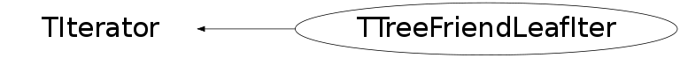

class TTreeFriendLeafIter: public TIterator
TTreeFriendLeafIter Iterator on all the leaves in a TTree and its friend
Function Members (Methods)
public:
| TTreeFriendLeafIter(const TTreeFriendLeafIter& iter) | |
| TTreeFriendLeafIter(const TTree* t, Bool_t dir = kIterForward) | |
| virtual | ~TTreeFriendLeafIter() |
| static TClass* | Class() |
| virtual const TCollection* | GetCollection() const |
| virtual Option_t* | GetOption() const |
| virtual TClass* | IsA() const |
| virtual TObject* | Next() |
| virtual bool | operator!=(const TIterator&) const |
| bool | operator!=(const TTreeFriendLeafIter&) const |
| TObject* | TIterator::operator()() |
| virtual TObject* | operator*() const |
| virtual TIterator& | operator=(const TIterator& rhs) |
| TTreeFriendLeafIter& | operator=(const TTreeFriendLeafIter& rhs) |
| virtual void | Reset() |
| virtual void | ShowMembers(TMemberInspector& insp) |
| virtual void | Streamer(TBuffer& b) |
| void | StreamerNVirtual(TBuffer& b) |
protected:
| TTreeFriendLeafIter() |
Class Charts
{kind=link}
{kind=link}
{kind=link}
{kind=link}

Function documentation
TTreeFriendLeafIter(const TTree* t, Bool_t dir = kIterForward)
Create a new iterator. By default the iteration direction is kIterForward. To go backward use kIterBackward.
TTreeFriendLeafIter(const TTreeFriendLeafIter& iter)
Copy constructor. Does NOT copy the 'cursor' location!
TIterator& operator=(const TIterator& rhs)
Overridden assignment operator. Does NOT copy the 'cursor' location!
TTreeFriendLeafIter& operator=(const TTreeFriendLeafIter& rhs)
Overridden assignment operator. Does NOT copy the 'cursor' location!